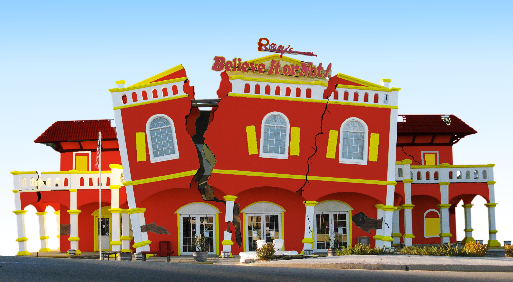

We love Strange!
Founder

Ripley's Believe It or Not! is an American franchise, founded by Robert Ripley, which deals in bizarre events and items so strange and unusual that readers might question the claims. Originally a newspaper panel, the Believe It or Not feature proved popular and was later adapted into a wide variety of formats, including radio, television, comic books, a chain of museums, and a book series. Established by LeRoy Robert Ripley in 1918, Ripley's collection now includes 20,000 photographs, 30,000 artifacts and more than 100,000 cartoon panels!
Visit us to witness the strangest!

Mercury Retrogade

Monkey Buffet

Two Headed Header